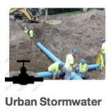

Features¶
Last Updated: May 19, 2014
App Dashboard¶
The Tethys Apps plugin adds an apps dashboard page to CKAN. All of the apps that are loaded via the plugin will be accessible here.

App Icon¶
Assign custom icons to your apps to make them easily identifiable.
Software Development Kit¶
Tethys Apps are developed in Python using a Model View Controller (MVC) strategy. The Tethys Apps plugin includes the Tethys Software Development Kit (SDK) that provides many tools to aid in the rapid development of the apps. The SDK also provides Python modules for working with all of the software that is included in the Tethys Software Framework.
Scaffolding¶
A new app project can be started with a single command. The Tethys SDK provides a scaffold that will setup a simple app project shell for you to build on.
Snippets¶
The SDK takes advantage of the CKAN templating construct called “snippets.” Snippets allow developers to insert common user interface elements with a single line of code in the template. Examples of snippets that are included are range sliders, toggle switches, buttons, interactive maps, and dynamic plots. All of the snippets are configured through Python.